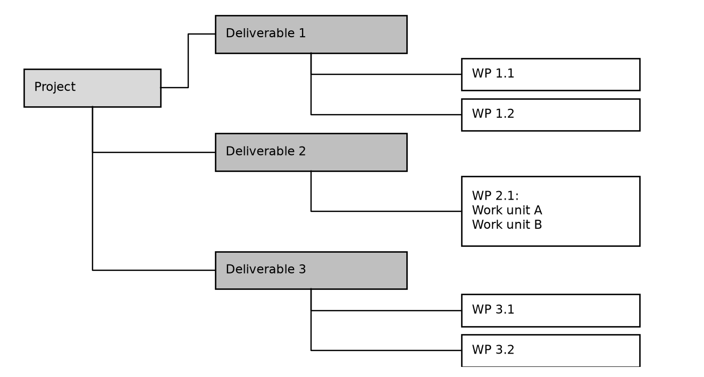
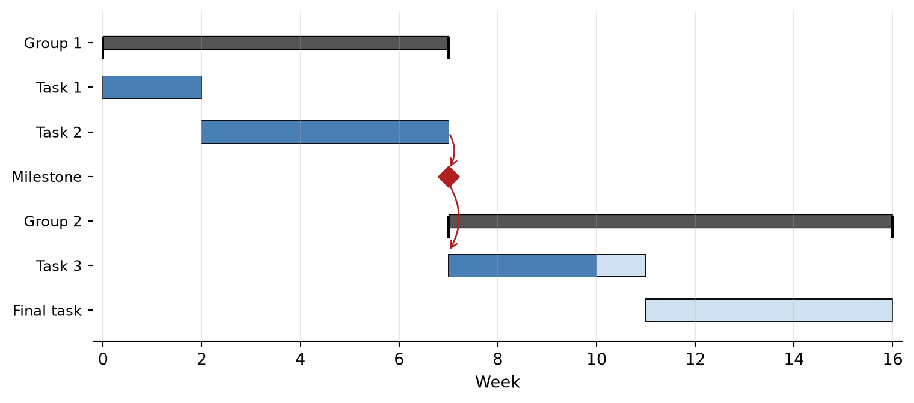

Design of Complex Integrated Circuits
| Phase | Main activities | Milestone (gate) |
|---|---|---|
| Definition | Requirements, feasibility, technology choice, budget | Specification and project plan frozen |
| Architecture | System modeling, block partitioning, block specifications, test and debug concept | Architecture review |
| Design | Schematic/RTL design, block simulation and verification | Design review |
| Layout | Floor plan, block layout, P&R, top-level assembly, PEX simulation | Layout review |
| Tapeout | DRC/LVS/ERC sign-off, final verification, database release | Tapeout |
| Fabrication | Test PCB, test program, lab setup (in parallel to the fab run) | Silicon arrival |
| Evaluation | Functional test, characterization, debug | Evaluation report |
| Qualification | Reliability tests, production test release (products only) | Release to production |

\[ t_e = \frac{t_o + 4 t_m + t_p}{6}, \qquad \sigma_t = \frac{t_p - t_o}{6}. \tag{72}\]

\[ \text{Float} = \text{LS} - \text{ES} = \text{LF} - \text{EF} \tag{73}\]
| Task | Description | Duration | Predecessors | ES | EF | LS | LF | Float |
|---|---|---|---|---|---|---|---|---|
| A | Specification and architecture | 2 | – | 0 | 2 | 0 | 2 | 0 |
| B | Analog design | 6 | A | 2 | 8 | 2 | 8 | 0 |
| C | Digital RTL design and verification | 4 | A | 2 | 6 | 6 | 10 | 4 |
| D | Analog layout | 4 | B | 8 | 12 | 8 | 12 | 0 |
| E | Digital synthesis and P&R | 2 | C | 6 | 8 | 10 | 12 | 4 |
| F | Top-level integration and verification | 3 | D, E | 12 | 15 | 12 | 15 | 0 |
| G | Sign-off and tapeout | 1 | F | 15 | 16 | 15 | 16 | 0 |
| Work package | Project lead | Analog designer | Digital designer | Layout | Test engineer |
|---|---|---|---|---|---|
| Chip specification | A | R | R | C | C |
| Bandgap reference | I | A/R | – | C | C |
| Digital control (RTL) | I | C | A/R | – | C |
| Top-level layout | I | C | C | A/R | I |
| Tapeout sign-off | A | R | R | R | I |
| Test program | I | C | C | – | A/R |
| Risk | \(P\) | \(I\) | \(P \cdot I\) | Response |
|---|---|---|---|---|
| Functional bug found after tapeout | 3 | 5 | 15 | Mitigate: verification plan with coverage metrics, reviews, spare cells and metal-fix options (see Section 10.5) |
| Late or immature PDK or IP | 3 | 4 | 12 | Mitigate: early test chip, qualified IP only, freeze PDK version |
| Key designer leaves or is unavailable | 2 | 5 | 10 | Mitigate: reviews, documentation, second person per critical block |
| Risk | \(P\) | \(I\) | \(P \cdot I\) | Response |
|---|---|---|---|---|
| Performance missed due to layout parasitics | 3 | 3 | 9 | Mitigate: parasitic estimates in early simulations, PEX simulations (see Section 10.3) |
| Shuttle date missed | 2 | 4 | 8 | Avoid: backward scheduling with buffer; accept: identify alternative shuttle |
| Specification change by customer | 2 | 3 | 6 | Mitigate: specification freeze and change-request process |
\[ \text{SPI} = \frac{\text{EV}}{\text{PV}}, \qquad \text{CPI} = \frac{\text{EV}}{\text{AC}} \tag{74}\]